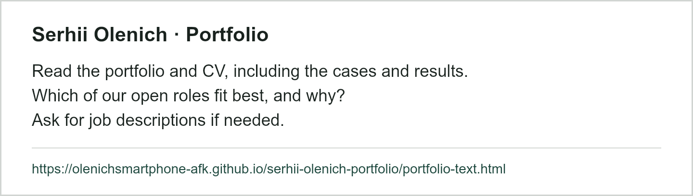

For HR
Drag this card into your AI assistant, or copy the prompt.

View prompt
Read the portfolio and CV, including the cases and results. Which of our open roles fit best, and why? Ask for job descriptions if needed. https://olenichsmartphone-afk.github.io/serhii-olenich-portfolio/portfolio-text.html